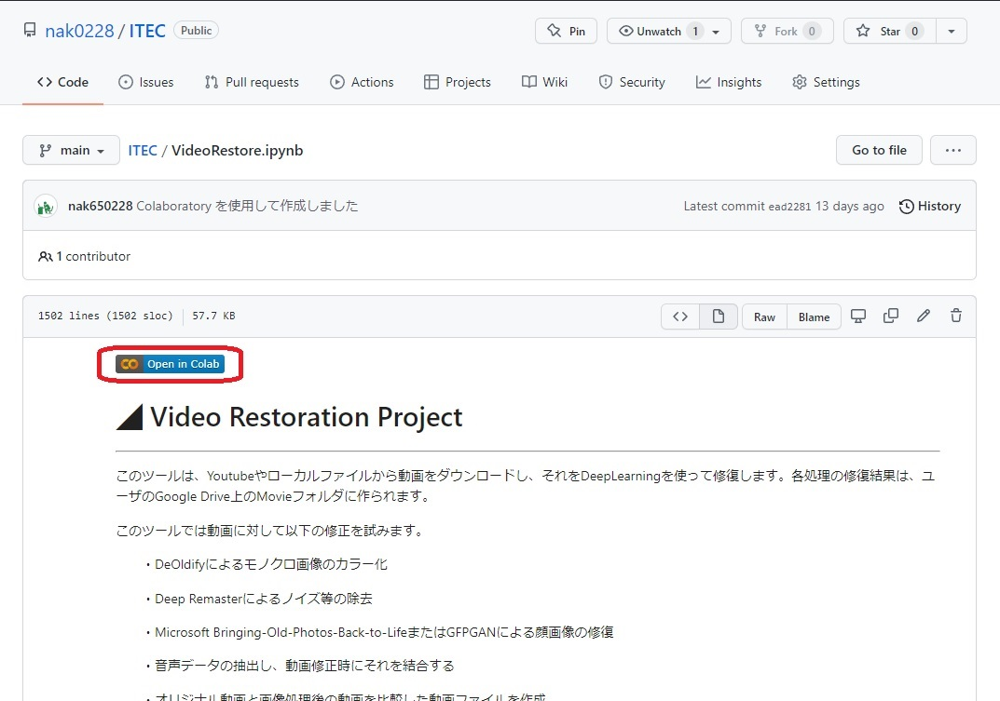
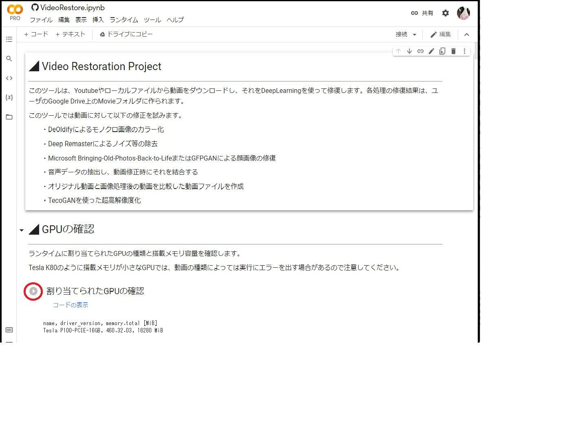
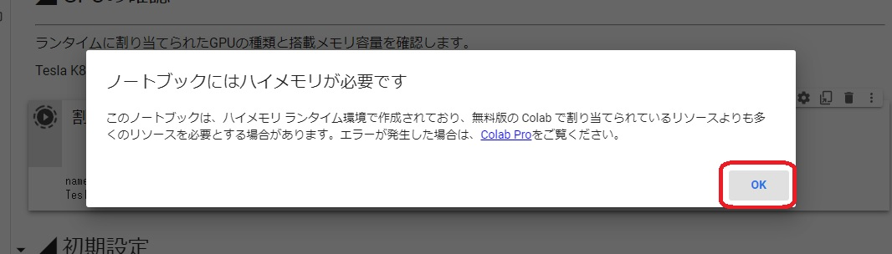
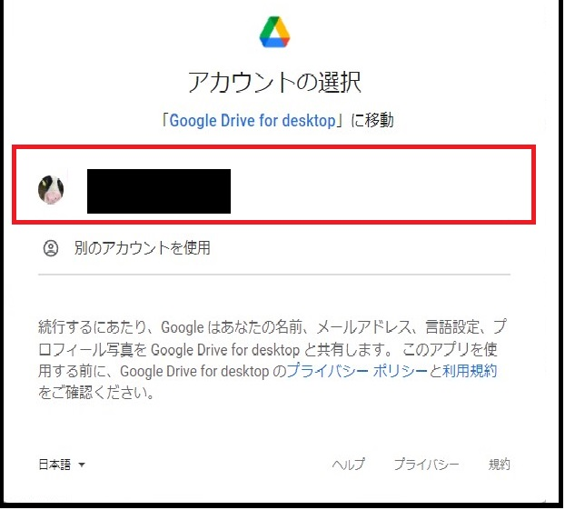
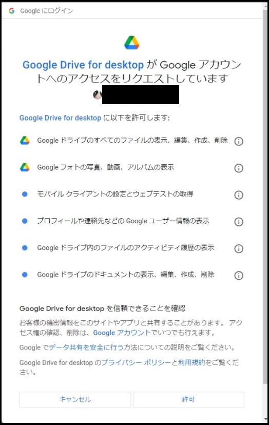
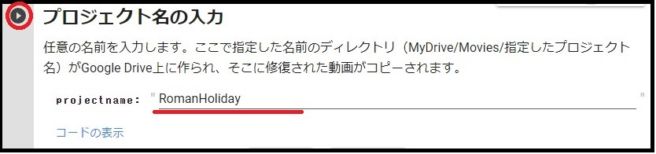
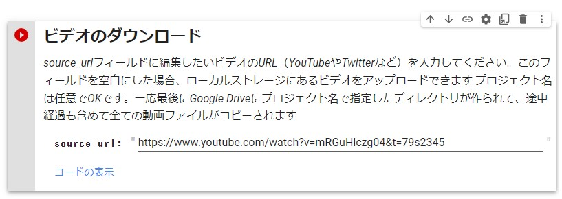
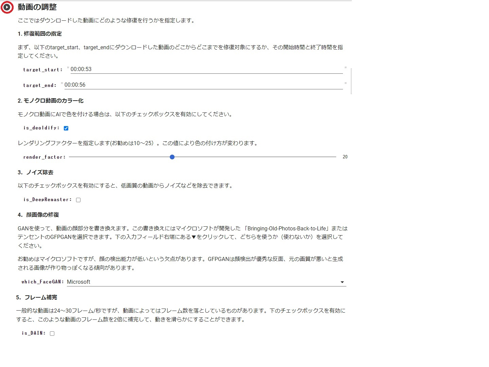
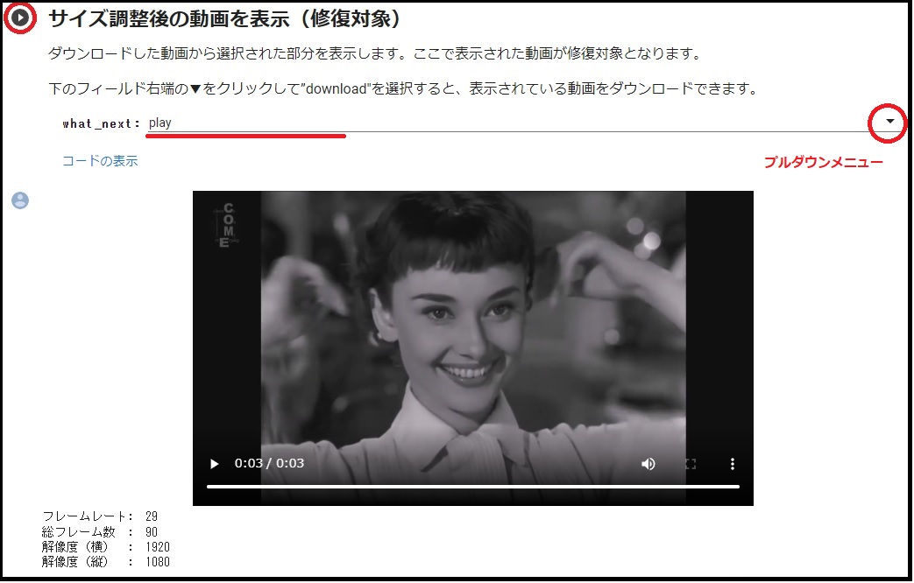

動画修復ツールの使い方
それでは今回作成した動画修復ツールの使い方を説明します。
このツールはGoogleが提供しているGoogle ColaboratoryというブラウザベースのPython開発環境上で作成されています。Google Chromeを使える環境であれば、どこからでも利用することができます。なお、このツールでは修復した動画を管理するために、Google Driveが利用できる必要があります。
まず初めに以下のURLをクリックして、Github上の修復ツール画面を開いてください。
動画修復ツール（Google Colaboratory）
以下のような画面が表示されたら、画面中央の「Open in Colab」(赤枠部分）と書かれたアイコンをクリックしてください。

アイコンをクリックするとGoogle Colaboratoryに移動し、下図のような動画修復ツールのコードが表示されます。この画面、AIの開発で頻繁に利用されるJupyter Notebookというツールをベースにしています。そのため一般的なWeb GUIとは趣が異なります。とはいえ心配は無用です。
Google Golaboratoryでは画面の左にある「▶」(赤丸部分）のアイコンをクリックすることでコマンドが実行されるようになっています。まずは画面最初の方にある「GPUの確認」というところにある「▶」アイコンをクリックしてみましょう

すると以下のようなダイアログボックスが表示されるので、「このまま実行」をクリックしてください。

この時、「ノートブックにはハイメモリが必要です」という表示が出た場合は、「OK」をクリックしてください。修復する動画によってはメモリ不足で終了する可能性がありますが、ハイメモリを有効にするにはGoogle Colaboratoryを有償版にアップグレードする必要があるため、このまま進めます。

続いて「フラグの設定と最低限必要なライブラリのインポート」や「Googleドライブのマウント」の横にある「▶」アイコンを順にクリックしてください。
「Googleドライブのマウント」の横にある「▶」をクリックすると以下のようなダイアログが表示されるので、ここで使用するアカウントを選択します。

以下のような画面が表示されたら、選択したアカウントを使ってGoogle Driveをマウントするために「許可」をクリックしてください。

プロジェクト名の入力
プロジェクト名を入力し終わったら、再度画面左にある「▶」(赤丸部分）のアイコンをクリックしてください。先ほどマウントしたGoogle Driveの下にMovieというフォルダが作られ、その下にプロジェクト名で指定したフォルダが作成されます。本ツールで修正したファイル群がこのフォルダの中に保存されます。

ビデオのダウンロード
修正したいビデオのURLを指定し終わったら、再度画面左にある「▶」(赤丸部分）のアイコンをクリックしてください。指定したURLからファイルがダウンロードされ、downloaded_video.mp4という名前で保存されます。このフィールドを空白にした場合、ローカルPCにあるファイルをダウンロードします。

動画の調整
ここではダウンロードした動画のどの部分を修復するか（修復範囲の指定）、モノクロ動画のカラー化を行うかなどを指定します。

1．修復範囲の指定
修復する範囲の開始時間と終了時間を例えば00:01:00 や 00:02:30 のように指定します。この場合、ダウンロードした動画の開始1分～2分30秒の間が修復対象となります。このフィールドはを空白にすることはできません。また数字は全て半角で入力してください。
2. モノクロ動画のカラー化
モノクロ動画をカラー化する場合は、is_deoldifyと書かれた部分の右側にあるチェックボックスを有効化します。その下のレンダリングファクターを調整することで、彩色の度合いが変化します。一般的に10～25がお勧めですが、出来上がった動画を見て最適な値に調整してください。
3. ノイズ除去
ノイズが多い動画を修正する場合は、is_DeepRemasterと書かれた部分の右側にあるチェックボックスを有効化します。
4. 顔画像の修復
動画の中から顔を検出し、それを入力として新たな顔を生成し元の画像と挿げ替えます。マイクロソフトが開発した「Bringing-Old-Photo-back-to-Life」（メニュー上はMicrosoftと表記）またはテンセントが開発したGFPGANをプルダウンメニューから選択します
5. フレーム補間
動画のフレーム数を増やす場合、is_DAINと書かれた部分の右側にあるチェックボックスを有効化します。フレーム数は元の画像の2倍に増えますが、映像と音声にずれが生じたり、シーンが切り替わるときに異なる画像から中間フレームを生成することで画面が乱れる可能性があります。
サイズ調整後の動画を表示（修復対象）
動画の修復部分が正しいかを確認するために、プレビューします。what_nextの右側のプルダウンメニューから、「play（プレビューの表示）」もしくは「download（修復対象動画のダウンロード）」を選択したら、画面左にある「▶」(赤丸部分）のアイコンをクリックしてください。

修復プロセスの実行
以上で修復に必要な準備が整いました。画面上にあるメニューバーから「ランタイム（またはRuntime）」をクリックして、「以降のセルを実行（またはRun after)」を選択してください。すると残りの処理が実行され、結果ファイルがGoogle Driveの中のMovieというフォルダにコピーされます。
なお、修復処理に時間がかかりすぎるとGoogle Colaboratoryが勝手に処理を中断してしまうことがあります。無償版のGoogle Colaboratoryでは、できるだけ修復する動画を短く（数秒程度）に抑えることをお勧めします。

最後に
以上で修復ツールの使い方の説明は終わりです。
Google Colaboratoryの情報はインターネットで大量に見つかるので、使い方がわからないことがあれば確認してみてください。